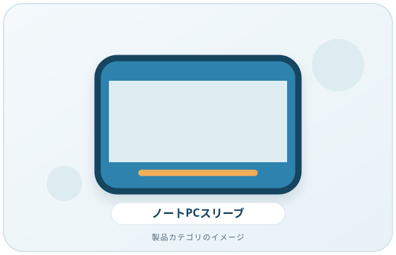
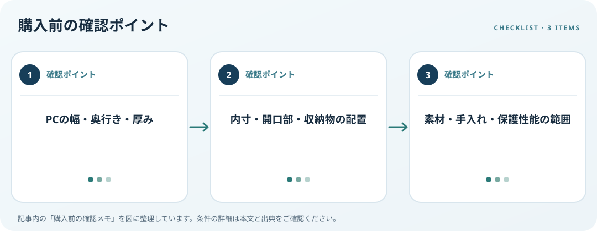

画面インチだけでなく、PCの縦横・厚み、開口部と一緒に収納する物を確認します。この記事では仕様の確認順を整理します。
画像・ボタンはAmazonアソシエイトリンクです。適格購入により紹介料を得る場合があります。

Amazon.co.jpで「ノートパソコン スリーブ サイズ」を探す ↗

PC本体の実寸を測る
メーカー仕様から幅・奥行き・厚みを調べ、ゴム足や突起を含む実機寸法と比べます。画面インチは表示部分の対角寸法で、ケース内寸そのものではありません。対応サイズ表示だけに頼らず、内寸とPCが入る余裕を確認します。
一緒に入れる物を決める
充電器、マウス、ケーブル、書類を同じ区画に収納するか考えます。ポケット内寸、開口部、ファスナー位置とPCの端子・角が干渉しないか確認します。硬いアダプターを画面側に重ねると圧力がかかる場合があるため、別収納も検討します。
素材と保護表示を読む
開閉方向、持ち手、内側素材、お手入れ、撥水表示をメーカー案内で確認します。撥水と完全防水を同じ意味に扱わず、雨天時の持ち運びも考えます。ケースだけで落下や衝撃から必ず守れるとは言えないため、保護性能の試験条件と保証を読みましょう。
購入前の確認メモ
- PCの幅・奥行き・厚み
- 内寸・開口部・収納物の配置
- 素材・手入れ・保護性能の範囲
この記事は出典の公開情報を購入前の確認項目に整理したもので、特定商品の使用・実測・レビュー・ランキング・価格・在庫の調査は行っていません。購入時には利用機器メーカーの最新仕様をご確認ください。
出典
- Find information about your Windows device — Microsoft（確認日: 2026-10-10）
- Surface Pro specifications — Microsoft（確認日: 2026-10-10）